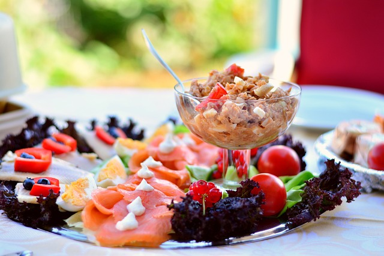

Tuna Pasta Salad

A Delicious Recipe for Tuna Pasta Salad
Tuna pasta salad is a creamy, flavorful dish featuring pasta, tuna, and fresh veggies in a tangy dressing.
Perfect chilled, it’s a versatile meal option that’s easy to prepare, customizable with herbs,
and ideal for lunch or picnics.
Ingredients:
- 8 oz (about 2 cups) rotini or bowtie pasta
- 1 can (5 oz) tuna in water, drained
- 1/2 cup mayonnaise (or Greek yogurt for a lighter option)
- 1 tbsp Dijon mustard
- 1/2 cup celery, diced
- 1/4 cup red onion, finely diced
- 1/4 cup bell pepper (red, yellow, or green), diced
- 1/4 cup frozen peas, thawed
- 1 tbsp lemon juice
- Salt and pepper to taste
- Fresh parsley or dill, chopped (for garnish)
Steps:
- Bring a large pot of salted water to a boil. Add the pasta and cook according to package instructions until al dente.
- Drain the pasta and rinse it under cold water to cool it down quickly. Set aside.
- In a large mixing bowl, whisk together mayonnaise, Dijon mustard, and lemon juice. Season with salt and pepper to taste.
- Add the drained tuna, celery, red onion, bell pepper, and peas to the dressing. Stir until everything is well combined.
- Add the cooked and cooled pasta to the bowl, and gently fold it into the tuna mixture until evenly coated.
- Cover and refrigerate for at least 30 minutes to allow the flavors to meld.
- Garnish with fresh parsley or dill, and serve chilled.